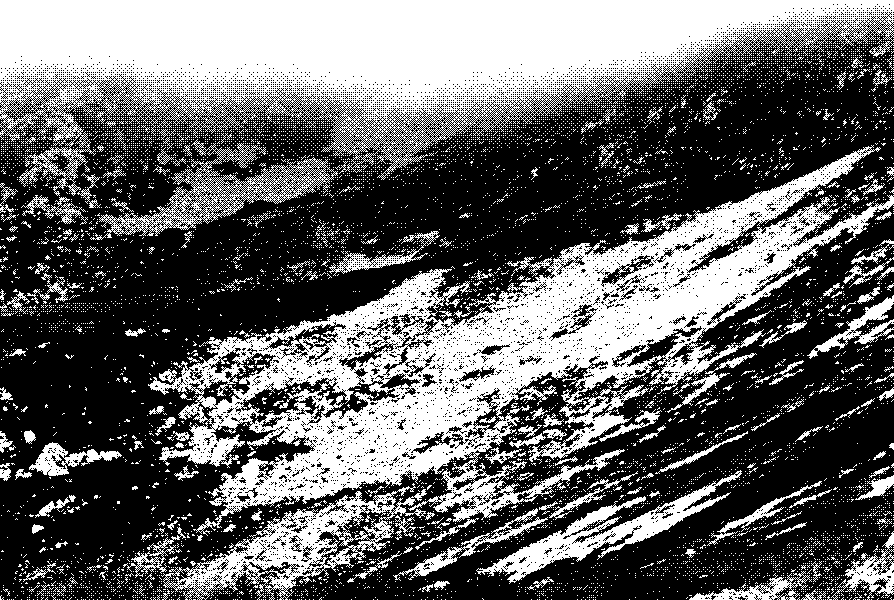
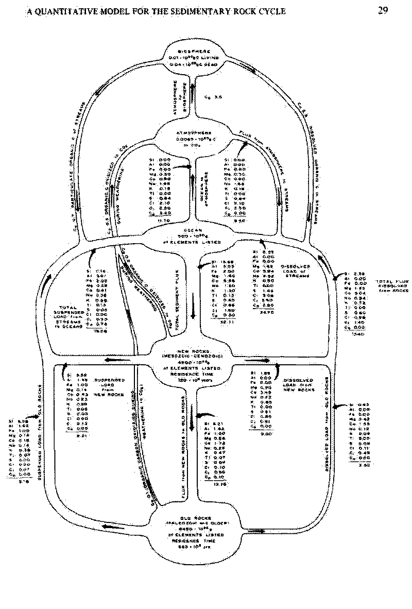
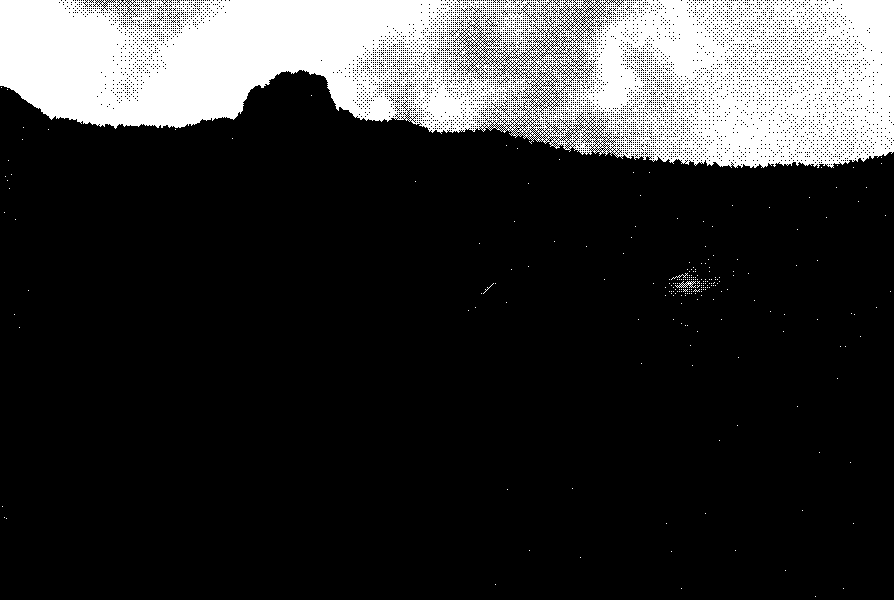
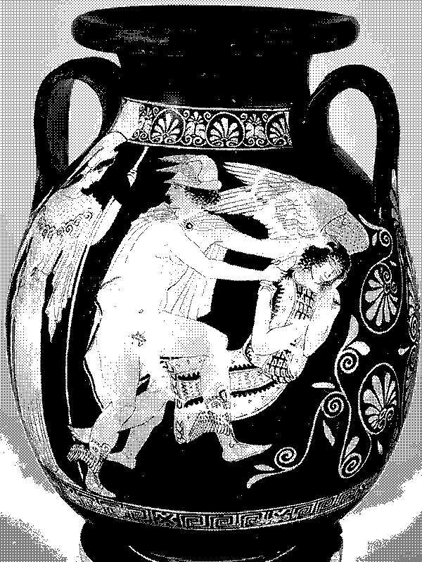
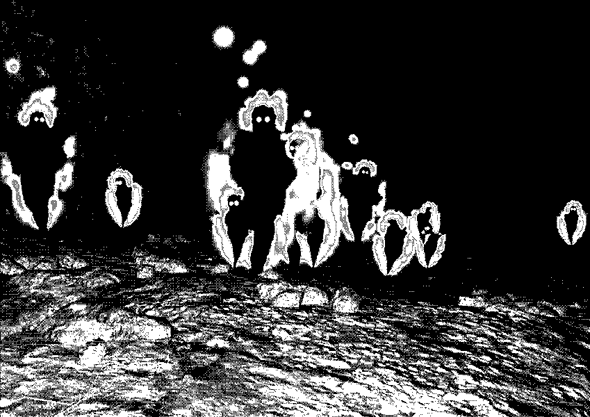
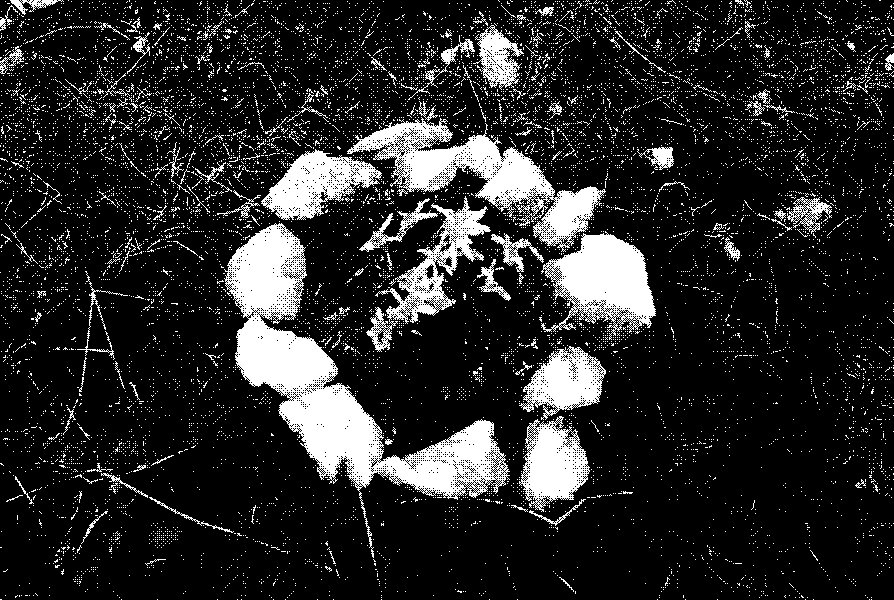
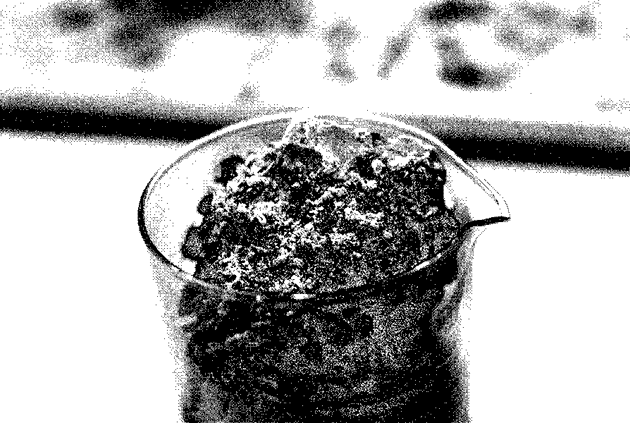
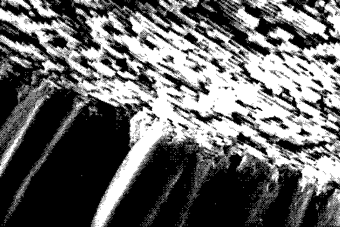
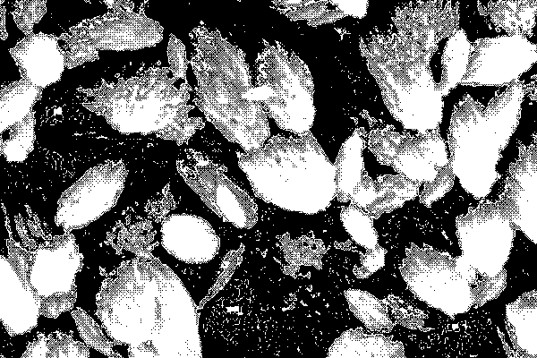

An Amalgam Paradigm
for an embodied practice of empathy with an inorganic aggregates ecosystemIntroduction
In 1973, the publication “Inquiry: An Interdisciplinary Journal of Philosophy” was drawing the boundary line between shallow and deep ecology in the words of the Norwegian philosopher Arne Naess. Rejecting the image of the man-in-environment, the article “The Shallow and the Deep, Long-Range Ecology Movement” defined the failure of anthropocentric ecology, which places the human above and outside nature, ascribing to the latter only instrumental, or use, values.[1] The shallowness of this approach lies in its floating behaviour on top of anti-ecological social and economic structures rooted in systems or patterns of domination of which patriarchal, imperialist, capitalist and racist are just some examples; without questioning the true foundations of modern, scientific, industrial, growth-oriented, materialistic worldview.[2] In contrast to shallow ecology — continues the article — deep ecology describes the universe as a network: phenomena following one another in interconnected and interdependent nodes, to which human and life itself is no exception; in what Arne Naess call as biospherical net. Taking a systemic stance, the fledgling philosophical school was defined as ecocentric, meaning that instead of placing the anthropos at the centre, it places its pivot on the ecosystem itself, or the network of relations that runs between things: “An intrinsic relation between two things A and B is such that the relation belongs to the definitions or basic constitutions of A and B, so that without the relation, A and B are no longer the same things. The total-field model dissolves not only the man-in-environment concept, but every compact thing-in-milieu concept [...]”. (Naess 1973)
21 years later, Fritjof Capra, physicist and systems theorist, described, reflected in this dichotomy, the image of a deeper perceptual crisis facing a whole series of environmental global concerns threatening the biosphere and human life. The direction of what he described as “a change of paradigms as radical as the Copernican revolution” (Capra 1996) traced the path moving from a mechanistic to a systemic perception of the world. According to Capra, in this paradigm shift from mechanistic to system thinking, the ontological relationship between the parts and the whole gets reversed. In the mechanistic vision of Cartesian science, there is an emphasis on the parts over the whole, which consequences in the belief that the behaviour of a system can be analysed in terms of the properties of its parts; while the systemic (or ecological) science, prioritising the whole, has shown that the properties of the parts are not intrinsic traits but contextual to the system in which they are immersed. [3]
Back to Arne Naess’s article, the parallelism between the dualism shallow/deep ecology and mechanistic/systemic worldview lies in their ontological approach to the world. The world of the man-in-environment is defined as a collection of objects (and that for this inherently mechanistic) in which first man and then the living are the exception, and in which hierarchical structures and the organization and categorization of matter enact its racialization. This mechanistic paradigm that prioritizes the parts on the whole produces logic of prevarication and extractivism that extend through and beyond the field of the passive or inanimate. The human and the inhuman, its subcategory, sprout from the division of matter into active and inert, and therefore passive (waiting for extraction and possessing properties).[4]
For this reason, in the paradigm shift from the mechanistic to the systemic worldview, the change of values is central. Since the scientific revolution, scientific facts have been believed to be independent from the system of values of those who generate them, but these observations emerge out of an ecosystem of human perceptions and values from which they cannot be separated. This ecosystem of perceptions, values and actions is a paradigm, a worldview that dictates how the world is perceived, interpreted and that for this, related to.[5] The embodiment of this systemic paradigm finds ground in the expansion of the self, with the identification of one’s identity with the environment, and the view of oneself as a node in a system of relationships. The implication of this worldview shift in the ecological self is that the connection between oneself and the environment is no longer logical but becomes psychological. The logical approach does not lead us away from the fact that we are an integral part of an environment and as such from the way we should behave; but a psychological connection, by changing the perceptual approach to the self, makes us more inclined to care for the ecological system to which we are bounded to.[6] Thus, the systemic approach expands from framing a method of analysis to a practice of empathy with the other-than-human.
It is within this newborn agglomerate body that the thesis emerges: a system of relations, an inorganic ecosystem that draws the behaviour of what Norbert Wiener defined as a feedback loop.[7] In seeking out the inner vitality of mineral agglomerates through the study of sedimentation processes, the thesis becomes an agglomerate itself; a multidisciplinary ecosystem of relationships endowed with properties that go beyond the mere sum of its components. In the course of the text all these subjects, from organisms to minerals, from disciplinary fields to the text itself, will be unfolded as clusters, sets made up of parts; and provided with emergent properties.[8] The emergent capacities of the mineral clusters reveal parallel to those of the interdisciplinary ones (and thus act as a transposition into reality); which in turn will provide support for the ecological vision of rock metamorphosis. In lithogenic terms, the thesis can be understood as a process of sedimentation and accumulation of knowledge. The research subject propagates along the links of the loop and becomes research method: the study of the potential of relationships within agglomerates through the agglomeration of knowledge itself. It’s a self-sustaining process where the thesis is both the researcher and the researched, feeding into each other’s development.
Wiener delineates the behaviour of these neo-coined feedback loop machines as purposeful and goal-directioned,[9] and for this reason, also this thesis presents one. The inquiry, triggered by the current climate crisis and propelled by the urgency for the perceptual paradigm of relations called by Capra,[10] aims to set aside the human exceptionalism that has fueled the nature/culture binome. As for the case of aggregates, the systemic approach is inherent to the components ecosystem of the research itself acting both as the subject and methodology of research. Tied by the red thread of this necessary paradigm shift and projected onto the case study of the lithogenic cycle, the questions guiding the research aim at the subversion of mechanistic hierarchies.
From the investigation into the divisive value of the biology/geology dualism, the research will develop issues like: how can vibrancy be restored to matter that the mechanistic paradigm has made inanimate and passive? What kind of hierarchical structures dictate the ontological relationships between human, biota and inorganic matter; and which narrations question the exceptionalism of one over the others? How can the role of emergence in inorganic agglomerates into organic systems demonstrate the potential of a systemic approach to interdisciplinary clusters?
Starting from the inquiry of the vitality of the apparently inanimate and the antrophomorphization of it as a practice of embodied empathy, will be explored how the rock cycle takes part in organic processes and how DNA can act as a geomorphological sedimentary agent. These research subjects will be deepen by framing the chemical and physical processes underlying the values of minerals and organisms’ agglomerates in an ecosystemic context; but will also serve as a real projection of the emerging and mutation abilities of disciplinary clusters. In order to prove the value of an ecological vision of entities and the animating power of aggregates, system thinking, material vitalism, emergence traits patterns and posthumanist visions on the individual will be woven through the narration of the thesis and of the lithogenic cycle. The autoethnographic methodology will shuffle narrative and critical thinking in the alternation of physical, metaphysical, and personal analyses in search of isomorphies between research subjects. Anthropomorphizing inorganic matter in fact is not intended as an anthropocentric act but rather an attempt to approach a formally distant subject, an attempt to empathize with it; but also a way of using empathy as a tool for critical analysis. With the aim of eroding the ontological divisions that dictate hierarchies and entities as separate and independent elements, each chapter is understood as a sedimentation act that weathers away hierarchical structures and deposits, and agglomerates their rests into the earthly kin of the lithogenic cycle; then renamed as Abyss as opposed to the world of human and divine abstractions.

[fig.1] (2023) View with low clouds on a gravel tongue along a slope of Mount Cavallo. Pordenone, Italy.
[1] Arne Naess, «The Shallow and the Deep, Long-range Ecology Movement. A Summary», Inquiry 16, fasc. 1–4 (January 1973): 95–100, https://doi.org/10.1080/002017473086016 82
[2] Fritjof Capra, The Web of Life: A New Scientific Understanding of Living Systems, 1. Anchor Books ed (New York, NY: Anchor Books Doubleday, 1996), 8.
[3] Ibid., 10.
[4] Kathryn Yusoff, A Billion Black Anthropocenes or None, Forerunners: Ideas First from the University of Minnesota Press 53 (Minneapolis: University of Minnesota Press, 2018), 29.
[5] Capra, 12.
[6] Arturo Rosenblueth, Norbert Wiener, e Julian Bigelow, «Behavior, Purpose and Teleology», Philosophy of Science 10, fasc. 1 (January 1943): 18–24, https://doi.org/10.1086/286788.
[7] Wiener describes the feedback loop as a circular sequence of causally connected elements, in which the initial cause propagates along the links of the loop until it feeds back the effect to the first element of the loop. Capra, 56.
[8] Emergent traits are qualities that are present in the whole of a system but absent in the individual parts that compose it; this means that emergent properties exceed the mere sum of the individual components taking part to the system. Ibid., 75 - 76.
[9] Rosenblueth, Wiener, Bigelow, 18–24.
[10] Capra, 8.
ACT I: for the vibrancy of the inanimate
By the time we arrived, the weather had worsened. It is not raining but a glacial wind is blowing along the slope, curiously from the bottom to the peak. Low clouds hastily ascend the mountainside as if they wanted to exchange with the boulders lying on it, which instead slowly descend. Me and Alessandro decided that we have reached our destination for the day. A wooden five-metre-high crucifix faces the flatland below, now covered by a sea of clouds. At its foot, a section of trunk cut in two along its length forms a bench on which rests my fanny pack and Alessandro’s backpack. Perhaps we could have climbed more if we had left earlier this morning. The clouds rush through me, and when they surround me, they are colder than ever; unfortunately, I have nothing to wear but the still useless rain jacket I am already wearing. It’s a nice feeling though. The mountain walls are still warm, they may feel the touch of the low clouds in the same way I do. In front of me a cone-shaped slope is covered with grass and boulders of different sizes; in the centre crawls a long tongue of gravel that cuts in half the huge lawn. Some animal whistles, perhaps a marmot.
I keep quiet.
I can fathom those sediments’ slow movement of descent and destruction towards the bottom. That slide is like an unspoken message to decrypt: the long gravel drip marks the imprints of the gravel sedimentation trajectory, and each stone DNA decipher its properties capturing its momentary state of mutation.
After a dozen whistles, silence fell, again, ironically religious in front of that crucifix. I keep staring at that mould of gravel and boulders in the middle of the slope, as if I am waiting for something. It looks like they are sitting together in lament or contemplation, while the upward river of fog flowing on them smooths and caresses their heavy thoughts. They look humans, which makes them vibrant, close and similarly alive.
I still remember how obsessed I was with those creatures when I was a child. Creatures, in the apparent naive way of intending them, as animate beings, endowed with willpower, that inhabit childhood reality rather than fantasy; but also, in the conscious efficacy excess of those object-entities beyond the human ontological perception, and beyond the life-matter binary, in what Jane Bennett calls thing-power.[11]
In their lively inorganicity resides a common vital materialism [12] that indistinctly permeates living and other-than-living beings, subjects and objects, and questions the edges and values of these two taxonomic categories. The rocks collected on the display cases in my bedroom were my roommates, animated within and without my imagination and which immanent liveliness, relatively far from my perceptive abilities, is recorded in the already visible decade-long mutual breathing.
The intensity of the silence that occupies the nights in the small burg where I grew up, has never been enough to listen the slow oxidative breath of those creatures; but they’re not passive matter, they move beyond direct human perception: a rhythmic cycle of inhalations and expirations transcribed on a geological scale score.
Dyeing opaque in a slow oxidation process, the previously shiny golden surfaces of the pyrite fragment still on top of my desk, have revealed themselves to be animated; they showed their breathing, their capacities of interacting with the moisture steamed out of my body, out of my touch; their organic-like traits. It is no coincidence indeed that the word animacy derives from the etymological root of soul, which in various ancient languages such as Sanskrit (atman), Greek (pneuma) and Latin (anima) means breath.[13] [14]
The animacy of matter shows itself as a property related to the perceptive threshold of the observer, an approximation; an analog signal transformed into digital, that switches to 1 once reached an appropriate range to be captured. Not differently from the cyclical movements of organic matter, rock and mineral compounds animate beyond human direct sensing, and follow circular paths of recycling and transformation. Depending on the pressure, heat and chemical-physical modes of agglomeration, the quantities and structures of the mineral element’s rocks are made of can vary, positioning them along a gradient of intersecting species.[15] This process is called lithogenic cycle, and within it, inorganic agglomerates act as living bodies, interdependent and active. Each of those boulders gathered in quiet contemplation represents a momentary state of matter, a mutation, an evolutionary stage. In their cyclical walk, the elements of the earth’s crust are continually transformed, disaggregated and re-aggregated from one form to another; and in doing so they exchange matter and act upon each other.

[fig.2] Garrels, Robert M., and Fred T. MacKenzie. ‘A Quantitative Model for the Sedimentary Rock Cycle’. Marine Chemistry 1, no. 1 (September 1972) Infographic of the quantitative model of the sedimentary rock cycle. Department of Oceanography, University of Hawaii, Honolulu, Hawaii (U.S.A.) Department of Geological Sciences, Northwestern University, Evanston, Ill. (U.S.A.)
The same animate matter change the disposition and way of relating of its particles, mutating from one agglomerate to another. Every mineralogical aggregate, every rock, every inorganic element of the earth’s crust carries a story within itself: a story of crossings and mutations from one state to another, from one body to another. Geological and other-than-geological bodies. The lithogenic cycle reveals itself not dealing with the genesis of the lithos, but rather with the re-organization of it. Beneath the human perception threshold and through geological time frames, the lithosphere comes alive and the lithogenic cycle emerges as a consequence of its liveliness.
The vital materialism that runs through the rocks on that slope and the animism projected onto them, in a self-reinforcing act nourish each other raising a progressive lively spiral that lifts them from the state of inert passivity which human unempathy, and life exceptionalism, relegated them into.[16] Under the lenses of vital materialism, anthropomorphism does not act as a narcissistic practice of projecting one’s image onto other organisational systems; rather, it acts on hierarchical mental structures by uncovering a world of resonances and similarities that would otherwise have remained buried.[17] Conceptualizing rocks or mineral fragments as creatures gives them a shape, if not anthropic at least biotic, relatable and easily empathizable with. Such levelling is useful to the de-categorization of entities by making them interchangeable in hierarchical terms: the human being as a mineral agglomerate or the lithogenic aggregates as a genetic outcome. It’s an embodied practice of empathy.
Thus, parallels are drawn between material forms in nature and culture. The ontological categorisation of being, divided between subjects and objects, is questioned by exposing a world of aggregates and materialities, a world of isomorphisms.[18] The mechanistic paradigm of a universe made up of distinct parts reveals, beneath the human perception threshold, a reality made up of forms that, in the similitude of one to the other, mutate, immanently, into each other.
Earth particles, crossing aeons, walk transparently through bodies, aggregates, and isomorphies, nourishing them and giving them flesh. I wonder how I am transparent to them too, if I can call myself a lithogenic incarnation. If I am a lithogenic morphology myself.
I look once again at the small ceremony between rocks. I take a picture of their ritual; I would like but I don’t join them. Instead, I stay stand contemplating from distance, like them, that settlement.

[fig.3] (2023) View of the sky from Mt. Cavallo track. Pordenone, Italy.
[11] Jane Bennett describes thing power as the ability of objects to manifest their independence and vitality by calling objects to mind as animate beings. Jane Bennett, Vibrant matter: a political ecology of things (Durham: Duke University Press, 2010). xvi, 20.
[12] Invoking a theory of relativity, material vitalism gems from the perceptible difference in velocity rates between entities considered fixed and those considered mobile. Objects' appear as such insofar as their happening occurs below the threshold of human perception of movement; but beyond their appearing, still there is no point of pure immobility, no atom that is not quivering with virtual force. Ildib., 55 - 57.
[13] The breathing matter in this writing is not intended as an ensouled entity endowed with a nonmaterial attribute able to give life to it; but rather as matter that is lively intrinsically and for this immanently in perpetual motion, exchange and transformation, even if beyond humans perceptive capacities.
[14] Fritjof Capra, The Web of Life: A New Scientific Understanding of Living Systems, 1. Anchor Books ed (New York, NY: Anchor Books Doubleday, 1996), 264.
[15] Igneous rocks for example, generate from the cooling of magma, but when exposed to the elements they can get weathered, eroded and cemented into a new shape: a sedimentary rock; eventually this new agglomerate sinks again undergoing the pressures and temperatures in order to mutate again and become a metamorphic rock.
[16] Kathryn Yusoff, A Billion Black Anthropocenes or None, Forerunners: Ideas First from the University of Minnesota Press 53 (Minneapolis: University of Minnesota Press, 2018), 89 - 90.
[17] Bennett, 99.
[18] The word isomorphism refers to entities of the same or similar shape. Ildib.
ACT II: for the embodiment of the Abyss
On the small terrace on which I stand, someone has assembled small stone circles here and there to mark the presence of shy blossoming edelweiss bushes. A tiny but sweet act of care. I take two pictures of one of them, then, in an unconscious act of isomorphism, I decide to lie down, side to it, and look at the sky for a while. I would like to try to feel what one of those rocks on the slope feels.
I feel exposed and fragile here. I am at the mercy of the elements; my bones would be easily eroded.
Despite the view limited by the low clouds the disarming openness of the sky frightens me: everything is so wide. I am not frightened by the height but rather by the non-existent risk of falling into the chasm above me. Like if a breeze too strong from below would drag me even higher with the next bank of fog. I open my palms and turn them to the ground, as if to hold myself and prepare for the fall; but I do not tighten them. I simply make sure that the ground beneath me is still there.
In that very natural gesture, I see myself belonging to the Abyss, the need to feel the mud under my feet, under my palms; like one of those creatures that Donna Haraway calls chthonic. Belonging to the earth, to the humus, to the Abyss, chthonian comes from the ancient Greek khthonios, meaning of the earth. In Greek mythology, these figures are depicted as beings from the underworld, subterranean creatures opposed to the astral gods; Hesiod wrote about them as sea demons, fearsome evil creatures intertwined with nature forces. [19]
In an act of hierarchical subjugation, the sky-gazing man has opposed the earth to the heavens by subjugating the Abyss and its creatures to the astral world of the divine. The chthonic Nature, through these narratives, become a malign and imperfect force that challenges benevolent human-like Gods: a dichotomy between astralized forces and the Abyss has been drawn. But chthonic creatures are older than these: the narratives of Ptonia Theron, or the Sumerian Ouroboros stem from a time when human abstractions did not dictate hierarchies between nature and the divine world. Far from those structures, abyssal creatures were linked to cycle of life and death, inextricably tying human with the liveliness of the earth; and it is from this ancient vision of the Abyss that Donna Haraway start drawing a chthonic ecosystem that subverts the patriarchal logic of nature’s hierarchisation to the semi-divine man. A place where the creatures act in symbiosis, shaping a sympoietic system where organisms eat and digest each other; and where humans are no exception.[20] Indeed, the word human proves itself chthonic: closely related to the term humus, earth, specifically moist, watery and therefore alive and cultivable, the etymological roots of this term draw several parallelisms with the ground world.[21] A narrative closer to the holism of the Ouroboros than to the dualist representation of Olympus and the Gorgons.

[fig.4] Attributed to Polygnotos. (ca. 450–440 BCE) Terracotta pelike showing Perseus beheading the sleeping Medusa. The Met Muesum, New York.
Despite the difference in the genesis of the concept, Haraway’s narration resonates with the way Hidetaka Miyazaki, director of FromSoftware, depicts the relationship between humanities and the Abyss in the videogame Dark Souls. “The Abyss is an ecosystem capable of creating life, as generated by one of the core components of the First Flame [...] it is uninhabitable to all beings aligned with Fire including the Gods. In contrast, any beings aligned with or indifferent to the Abyss (such as humans) are able to roam it with no risk of harm or corruption.” (Murray 2019) In Miyazaki’s work, the Abyss is described as a corrupt place, a manifestation of humanity’s dark side when left unchecked; but also as primordial soup, a generative agent of life and that for this cradle for humanities: black shadows, small chasms (or abysses) describe “the base form of human beings”, entities independent from their bodies that wander hollow in it.
While Haraway’s Abyss narrative is aimed at the subversion of human exceptionalism and the mental hierarchical structure whereby humanity (and the Gods as a consequence) is superior to nature, Miyazaki’s painting stems from an extremely anthropocentric worldbuilding, calling the Abyss as a dark manifestation of the “unchecked” human souls and therefore corrupt.[22] But, despite the divergent narrative intentions, the two share unexpectedly common traits.
Starting from the opposition to the astral manifestations of the divines, Haraway conceptualise this dualism in the power of the Abyss to subvert patriarchal and hierarchical interpretations of nature and humanity; for Miyazaki, instead, the opposition is more factual “[only] beings aligned with or indifferent to the Abyss are able to roam it with no risk of harm or corruption”, and the Gods are not among them. Cradle of humans, in both narratives the Abyss breaks the artificial umbilical cord that keeps humanity connected to its divine exceptionalism: the human becomes humus and adam becomes adamah,[23] deeply connected to the earth, to the mud, to the underground; and instead, they describe it as a generative and ecosystemic environment which, in its sympoietic becoming, life inherently take part to it.
Emerging from the interaction of its components, a sympoietic system not only needs the relationship between its parts in order to thrive, but is the complex of the relationships themselves. Ecosystems, for example, are sympoietic structures, and they can be interpreted as emergent behaviours and relational entities which spatial and temporal boundaries, unlike autopoietic systems,[24] are not well delineated, but rather blurs away in the context they are settled. In the sympoiesis of its creatures, the Abyss thus takes the form of what Scott F. Gilbert, Jan Sapp and Alfred I. Tauber defined as a holobiont.[25] An entity far from the One and the individual, in which the creatures taking part to it, its node of relationships, create each other through material involvement.[26] But also each chthonic entity, as in Miyazaki’s illustration of humanities, is a small chasm itself, and therefore constitutes both node and network of a sympoietic system.

[fig.5] Posted by Daifukkatsu in Humanity Phantom page of Dark Souls Wiki (2014) Humanity Phantoms in the Chasm of the Abyss. Dark Souls.
This chthonic newborn holobiont does not only involve organic entities, but also inorganic ones: in the symbiotic co-dependency between living and non-living actors, molecules of different complexities constitute information and exchange material between the biological and geological realms, which, by crossing each other sympoietically, break the ontological chains that keep them separate. What the concepts of symbiosis, sympoiesis, and co-evolution share is that they commonly refer to the context of interactions within the disciplinary realm of biology; in this sense, the use of such terms to describe relationships between and with the other-than-living returns to matter the anima-cy lost in the ontological subordination process of the geological to the organic. Indeed, co-evolutionary and symbiotic traits are not exclusive to the organic realm; rather, the biosphere, atmosphere and lithosphere have always experienced co-evolutionary processes. James E. Lovelock and Lynn Margulis in their formulation of the Gaia Hypothesis[27] question the profoundly anomalous chemical composition of the atmosphere as evidence of this co-evolutionary behaviour. “[...] the word Gaia will be used to describe the biosphere and all of those parts of the Earth with which it actively interacts to form the hypothetical new entity with properties that could not be predicted from the sum of its parts.” (Lovelock and Margulis 1974) In their identification of shared behaviour, Lovelock and Margulis extend the tentacles of Gaia’s macro-creature outside the boundaries of the biosphere to reach agents commonly described as passive (and therefore lacking in evolutionary capabilities). But the comparison with the nearby planets of the solar system, makes visible the organic-inorganic co-evolutionary proceeding of this web, that allowed life to thrive on the planet.[28] In the meanwhile, chemical and physical reactions between atmosphere and lithosphere have diverted the evolutionary progression of organic systems as well. Through the absorption and processing of lithogenic components, organisms have influenced the formation of new mineral patterns, redirecting the sedimentation paths of the lithosphere itself.[29]
For this reason, organogenic rocks such as limestone or graphite can be understood as the result of evolutionary processes of a breathing lithosphere in dialogue with the biota. The symbiotic exchange between inorganic spheres and biosphere is integral to their mutual existence as such; Gaia’s inherently co-evolutionary behaviour results in a dynamic equilibrium between its parts acting both as a system and as the whole of a historical entity. Thus, from well-defined margins the tentacles of sympoiesis extend out, searching for our common relational entity, our shared bio-mineral system, and continue, further, to spread the Abyss on the fabric of existence; fusing bodies and networks together. Whether biological or mineral, chthonic tentacles branch to and intertwine living and other-than-living aggregates in co-evolutionary processes on multiple space-time scales; beyond the biological/geological dualism. We are not different: mineral and organism, knots and networks, we’re both made up of relations. In the dialogue between me and the rock aggregate side to me, the chemical exchange is our present language, our holobiont and our piece of Abyss. But this present chemical language is nothing but an echo of an irreducible common past, not limited to sharing a space, but written in terms of genetics, and kinship.
In the slow but inexorable progression of the lithogenic cycle, the chthonic creatures take part to the Abyss, symbiont after symbiont, network after network, aggregate after aggregate; banished and far from the astralisations of the Gods. In our momentary organisational states, earth particles are cyclically embodied and scattered; a time-encompassing interaction rooted in our belonging to Gaia, in our common kin and blood.
Organic matter, fossil, sediment, stone: the vibrant lithogenic stream fills the subterranean chambers of volcanoes with incandescent material and pushes up the mountain chains; but it also pulses, tepid, the blood in my veins.

[fig.6] (2023) Circle of stones to mark the presence of the edelweiss bush. Pordenone, Italy.
[19] The Gorgons are an example of chtonic creatures within Greek mythology. Those creatures are described with an undefined horizontal lineage, capable of transforming men who looked at their faces into stone. Donna Haraway, Staying with the Trouble: Making Kin in the Chthulucene, Experimental Futures Technological Lives, Scientific Arts, Anthropological Voices (Durham London: Duke University Press, 2016), 202.
[20] Ildib.
[21] Ildib.
[22] Murray, Wil, a c. di. Dark Souls Trilogy Compendium. Hamburg, Germany: Future Press, 2019.
[23] Even in Hebrew, a parallelism can be found between the word adamah (earth) and the term adam (man). Haraway, 202.
[24] Autopoietic systems define selfcontained systems capable of self-supporting and selfregenerating, with well-defined boundaries separating them from the external environment. Ildib.
[25] Meaning whole being, the term is used to describe the cluster of multicellular eukaryotes plus its colonies of persistent symbionts in one single unit. Scott F. Gilbert, Jan Sapp, and Alfred I. Tauber, «A Symbiotic View of Life: We Have Never Been Individuals», The Quarterly Review of Biology 87, fasc. 4 (December 2012): 325–41, https://doi.org/10.1086/668166, 2.
[26] Haraway, 90.
[27] The Gaia Hypothesis is a theory that frames the biosphere and all its interacting parts as a macro symbiont capable of maintaining planet Earth in homeostasis. James E. Lovelock e Lynn Margulis, «Atmospheric homeostasis by and for the biosphere: the gaia hypothesis», Tellus A: Dynamic Meteorology and Oceanography 26, fasc. 1–2 (1 January 1974): 2, https://doi.org/10.3402/tellusa.v26i12.9731, 2.
[28] Since life appeared, liquid water was always present and its pH never fell far from neutral; moreover, the atmosphere, since then, has always been in a great chemical disequilibrium (30 orders of magnitude compared to Mars and Venus) allowing organic forms to thrive. Ildib.
[29] An example is the development of biomineralizing genes as consequence of the dissolution of large quantities of carbon dioxide due to the intersection of mountain ranges with the upper atmospheric layers. Dartnell, Lewis. Origins: How Earth Shaped Human History. London: Vintage, 2020.
ACT III: for the genetics beyond genetics
Still lying on the ground, I turn my head towards the stone of the circle closest to me. Cast in the pale limestone, several marine relics take part to an act of care between entities of the Abyss
Fragments of shells and ancient sea creatures fused into the same rock body surround the tiny edelweiss bush in order to flag its presence. Many of these molluscs, after death, settled on the seabed, accumulated and, buried by the sediment, became embedded in the present-day Alpine geological formations.[30] Their hybrid nature proves the patient, transparent walk of earth particles, which incarnation after incarnation are transported along and through Earth’s crust; but also, the existence of a material vibrancy in any entity not considered matter. The fossil organizational state represents the bio-mineral lineage gate: the living beings as sediment and the stone as former- (or future) alive bodily remains. A relational moment in the middle of two others, the organic and the inorganic, communed by the animacy inherent to networks; and in which the mineralogical kin, the common substance,[31] flow through like blood or magma streams.
During the fossilization process, body structures can be replaced by other minerals or mineralise themselves by chemical modification; this process is also called diagenesis. [32]
Fossilization and diagenesis are not perfect synonyms, but both express the modifications of an object through its historical or geological history. According to the 19th century geologist Karl Wilhelm von Gümbel, the term diagenesis describes a post-sedimentary, non-metamorphic transformation of sediments into a different sedimentary rock at low temperatures and pressures.[33] The fossilisation process acts as a subgroup of the diagenetic ones, embedding the organogenic component in the process. It describes the transition from one organisational genesis to another, a mutation beyond-species, beyond-individuals and beyond the concept of life itself; but also, it passively reinforces the consanguinity between organic and lithogenic creatures as part of the same lineage.
Vital materialism act like genetics beyond genetics. Fossilization embodies the evidence of the after death bodily mutation’s continuity in the lithogenic cycle; of the common belonging to the same, earthly kin. A double directional kinship that thrives along the moment between the living and the never lived, and that occupies the touching point of the two semantic bubbles that separate what is considered alive and what is not. Inorganic animacy indistinctly permeates organisms and in-organisms by showing itself in the chemical exchange of sympoiesis and the inherently co-evolutionary properties of Gaia; through the fossil organizational state the vibrancy becomes embodied: the demonstration of the cyclical transition from organic to inorganic form (and vice versa) of the lithogenic cycle.
Bringing testimonies from the Abyss, as if to reveal the unspoken lithogenic origins of those alpine flowers, the circle of pale limestone rocks takes a picture of the neritic waters that occupied this area during the Triassic. [34]

[fig.7] (2024) Organogenic alpine limestone with crystals of calcium acetate. Eindhoven, The Netherlands.
Like the nearby Dolomites, these limestone mountainous aggregates are mainly formed by carbonate organogenic rocks;[35] here innumerable terrestrial particles have claimed life, and after blossoming, have settled and lithified in these geomorphologies. The source of such huge quantities of carbonate organic material has been traced in the so-called carbonate platforms, underwater mounds of carbonate organic matter precipitated and accumulated on the seabed.[36] The platform, made of former-alive material, serves as a foundation for future life forms above it, which in turn nourish the platform itself. Hybrid organic-inorganic co-evolutionary systems, equipped of the emergent properties that drive their growth, thrive and renewal.[37] The organic boundary of a carbonate platform is difficult to delineate: lives generated on top of the remains of others, old organisms that act as foundations for new ones, sediments that emerge in living systems to feed the geomorphology from which they developed from.
In the sedimentary progression of this chthonic system, genetics and lithogenetics, collaborate and determine each other in a feedback loop: the result is a sympoietic ecosystem, capable of evolving from the interaction between parts, and to testimony the Abyss’ ceaseless becoming.
Suddenly I feel myself walking in a graveyard, and that previously ironic silence becomes real and respectfully heavy. Each of these ancient cliffs stands as more than mere geological formations; they emerge as ossuary, funerary monuments, ecosystemic fossils. Somehow, at different moments in time, this mountain has been alive, and organic. Layer after layer, the geomorphology on which my back sets has embodied an organism, has claimed life. The result of an unexpected co-evolutionary alchemy that is not limited to the gene but goes far back through eons. These ridges are genetically driven geomorphologies, in the meaning that the gene determined the genesis of this rock, its lithogenic path.
The emergence of biomineralizing genetic behaviour[38] in cyanobacteria gave them the ability to synthesise calcium and carbon from the shallow waters in which they thrived, deviating lithogenic sedimentation patterns, and affecting the production of the future mountain clusters.[39] The inorganic implications of biomineralization go beyond the narrow realm of biology and involve the breathing of Gaia system. The sheer volume of calcium carbonate and silica produced by marine organisms dominates important aspects of ocean chemistry, and consequently those of the atmosphere as well.[40]
The evolutionary development of organisms with genes capable of creating structures through biomineralization confirms in two directions the continuity of intent of organic and non-organic aggregates. [fig.9 - 10] If on one way the ability to form calcium carbonate, silica or phosphorus structures can be decisive in terms of the geomorphological development of certain geographic areas; similarly, the abundance of a specific resource can be led by biological or geological processes, and decisive in the evolutionary development of systems as individual or species, or the emergence of certain genes over others
DNA not only act as agent on sedimentation patterns but is mineral embodiment itself: life is not alien to geological happening. Organisms are pure mineral flesh. A relentless rain collapses the skeleton of power that dooms the Abyss, and its minerals melt to nourish the generative ecosystem that previously lay at its feet. Under this newly casted shadow of a disrupted hierarchy, the chthonic creatures thrive and regenerate; and the organic is left nothing more than a random expression of a far-reaching tentacle of the Abyss, a geologic happening embodiment, a mineralogical aggregate.


[fig.8-9] Addadi, Lia, and Stephen Weiner. ‘Control and Design Principles in Biological Mineralization’. Angewandte Chemie International Edition in English 31, no. 2 (February 1992) Microscopic views on organogenic aragonitic biomineralized crystals. Dead Sea.
The wind has exhausted its force and the cloud banks that were previously rushing towards the summit of the mountain, slow down to fall back to earth in the shape of rain. The first raindrop has fallen on the clump of edelweiss in the centre of the circle of rocks, the second one printed on my T-shirt; the weather is changing, a sign that it is time to turn back. It is the end of a cycle: as this water runs, it will slowly dissolve the ecosystem fossil on which I’m laying on and will transport the precious minerals set in these limestone agglomerates, downstream, to feed the valleys underneath.
I stand up with some haste but still enjoying the sensation of the frozen droplets crashing on my skin. One of the fragments at the periphery of the marking circle will come down with me, it will be my sedimentary companion. I pick it up, almost unconsciously, and holding it in my hand I head for the wooden bench.
I call out to Alessandro, who in the meantime has wandered off towards the tongue of boulders and gravel, telling him that is time to leave. I collect both bags from the foot of the crucifix and set off, towards the path from which we came. In the increasing rain, I put on the hood of the so far useless K-Way and together we begin our descent. As the raindrops persistently hit my skin searching for my bones, I try to keep the friction between my shoes and the trail gravel that seems instead to run down the mountain by itself. In the parallel isomorphy of the descent, the bones and the rest of the minerals in my body join the sedimentation process of their kin on the slope, embodying a life-long erosional process.
The system of myself emerges from the aggregate of these particles slow descent. Pushed by the water that now beats on the hood of my rain jacket I descend in altitude: in this act I deny divinities, human exceptionalism and the system hierarchies that have dictated my perception, to join the Gorgons and sea demons that inhabit the generative underground niches of the Abyss. Every step transforms potential energy into kinetics under the pull of gravity and the guidance of this gravel track.
I am isomorphically following the erosive course that will inevitably lead to the exhaustion of the energy emerging from the mineralogical aggregate of my body; and that will lead my system-individual to disgregate and finally settle. Once reached the bottom I will become sand at the foot of this mountain, leaving behind, at the side of the path only the fragment I gathered from uphill, the inexistent abstraction of my One.
The genes and mutations that have transformed me are not even mine, they are the geological memory of this planet and proof of our reciprocal being. I am sediment in this lithomorphic movement of descent, and I am also sediment in the organomorphic life-long movement of myself; and I will be sediment as well in setting down my bones and blood to the ground.
[30] Claudia Marella, Riccardo Caputo, Alfonso Bosellini, Growth and subsidence of carbonate platforms: numerical modelling and application to the Dolomites, Italy (ANNALS OF GEOPHYSICS, VOL. 47, N. 5, October 2004), 1.
[31] Donna Haraway, Staying with the Trouble: Making Kin in the Chthulucene, Experimental Futures Technological Lives, Scientific Arts, Anthropological Voices (Durham London: Duke University Press, 2016), 196.
[32] The term diagenesis stems from the Greek dià (passing through) and génesis (origin, birth). Yannicke Dauphin, «Vertebrate Taphonomy and Diagenesis: Implications of Structural and Compositional Alterations of Phosphate Biominerals», Minerals 12, fasc. 2 (30 gennaio 2022): 180, https://doi.org/10.3390/min12020180, 1.
[33] Ildib.
[34] Marella, Caputo, Bosellini, 1.
[35] Organogenic rocks are sedimentary rocks derived by the diagenesis of organic substances; indeed they usually originate by the agglomeration and fossilization of bones, plant remains, and other types of biomineral structures. Preto Nereo, Incontri di Geologia, Università di Padova, filmed 30 November 2017, video of lecture
[36] Ildib.
[37] As the organisms mainly thrive on the shallow waters above it, it is necessary that, in the absence of appreciable water uplift, the platforms “grow” downwards. The weight of the platform in fact causes subsidence phenomena that make the seabed sink, leaving space for continuous ecosystem renewal. Marella, Caputo, Bosellini, 1.
[38] The ability inner to organisms to manipulate the crystallization of mineral compounds within their own bodies to create body structures is called biomineralization. The earliest evidence of this evolutionary trait has been located in the same microorganisms that made these geomorphologies and the sedimentary structures they create. David J. Bottjer, «Geobiology and Palaeogenomics», Earth-Science Reviews 164 (January 2017): 182–192, https://doi.org/10.1016/j.earscirev.2016.10.006.
[39] The emergence of such evolutionary traits was probably promoted by an increased presence of suspended minerals in the water, caused by bioturbation behaviours (the ability of digging the seafloor) in other organisms. Bottjer, 182 - 192.
[40] Lia Addadi e Stephen Weiner, «Control and Design Principles in Biological Mineralization», Angewandte Chemie International Edition in English 31, fasc. 2 (febbraio 1992): 153–69, https://doi.org/10.1002/anie.199201531.
Conclusion
I interpret this thesis as the result of a process of sedimentation, emerging from the accumulation and agglomeration of personal experiences and knowledge, scientific research and philosophical interpretations; as well as mediated by a cyclical interchange of real and metaphysical interpretations of phenomena that have defined its narrative form. Thus, the value of this thesis arises from the emergent properties of the research agglomerate itself, from the interrelation of its parts.
This investigation is not only intended to play on the posthumanist level of analysis, rather it works on three levels of exploration of the capacities of the aggregate. The geological agglomerate and its ability to act as vibrating matter, and thus emerge in alternative forms to the “passive” mineral aggregate; showing interaction capacities with and within organisms, abilities to move below the human perceptual threshold in the lithogenic cycle and exchange with other spheres of Gaia. The potential of the porous edges of interdisciplinary aggregates in promoting alternative perspectives that result in new scientific models; and that stems from the application of the systemic paradigm on a disciplinary level. The studies that have fuelled the research on the case study of inorganic aggregates are for the most part disciplinary crosses, hybrids between vertical fields of study. And the thesis itself as an aggregate of knowledge, mediated by personal experiences and nourished by isomorphisms capable of relating the author, the reader and the subject matter.
Within this multilayer frame, the lithogenic cycle act, indeed as case study; the lenses through which to put into perspective the properties of aggregates and the value of the relations between parts. Using as a research reference a process capable of generating and guiding the transformation of agglomerates supports the value for a systemic view of entities, and thus aware of the capabilities of relations and aggregates.
As well as the thesis is intended as sedimentation phenomena, each chapter is an erosive act aimed at questioning the hierarchies that guide the perception of reality, and that deposits, in the form of an amalgam, a new agglomerate, a primordial soup from which the generative capacities of the destroyed hierarchies emerge: perceptive possibilities of relations with and between them.
Starting from the hierarchical structure that divides the object from the subject, the first act aims to erode the dualism between active and passive matter by searching for the vibrancy of it below the threshold of perception. The lithogenic cycle becomes an enormous lung in which agglomerates of stationary and rocky matter breathe and change form to form. The lithogenic cycle becomes a huge lung in which, agglomerates of static and rocky matter breathe and change from form to form in a systemic assemblage; a transformative cycle, in which the same shared particles mix and transform from one agglomerate to another, revealing the concept of genesis as a systems’ cataloguing method rather than an actual act of genesis. From the lithosphere to the pyrite fragments collected in the room where I grew up, the immanent form of things also occurs under the anthropomorphisation of them, used as a tool to further empathize with such “seemingly” different subjects. In the second chapter, other ontological limits are eroded, transforming the spatial and temporal perimeter of the individual into a porous surface into which other “individualities” blur. Through the narratives of the Abyss, the values of human exclusivism and the division between nature and culture are questioned and then reconnected to the earth, to the humus. The Abyss is revealed as a sympoietic ecosystem in which individualities (and consequently the components of the mechanistic paradigm) cross over each other to form a new, inherently multiple and systemic unity. These narratives are reflected in the Gaia Hypothesis developed by Margulis and Lovelock: the chthonic holobiont demonstrates the symbiotic and co-evolutionary relationships that exist (and have always existed) between organic and inorganic beings. Each individuality of Gaia is a node and system that takes full part in the lithogenic becoming by sharing its particles with the earth’s crust; vibrant matter originating from the clustering of this elements, a set of internal and external that make up porosities. The erosional journey ends in the third chapter, where the hierarchical structure between biological and geological realms is finally broken down: DNA becomes not only an agent of sedimentation but lithogenic cycle itself, and the organic creatures that take part in the very becoming of the Abyss become life-long erosional processes. In analyzing the ontological value of fossilization processes in the systemic view of the lithogenic cycle, the Dolomites embody an ecosystemic fossil resulting from an evolutionary process beyond the organic; and enabled by the genetic development of biomineralization processes. The overlap between disciplinary aggregates allowed a vision outside the realm of the merely biological or geological, thus identifying in sedimentation processes the communion of intent between organic and inorganic becoming.
Finally, the parallelism between inorganic and disciplinary aggregates finds a meeting point in sedimentation processes: the lithogenic cycle has proven the ability of inorganic aggregates to emerge in complex organic systems; and at the same time, disciplinary aggregates have fueled research paths that challenge disciplinary dogmas.
At the end of this autoethnographic narrative, the anthropomorphic approach that initially facilitated empathizing with other-than-organic creatures is totally reversed, reflecting inorganic isomorphies in organic systems: from rock fragments as creatures to creatures as erosive systems themselves.
Isomorphy becomes an embodied practice, in a critical time of climate and social crisis, to establish empathy with organic and other-than-organic subjects; to reevaluate the concept of self as part of an ecosystem of agents, as part of an environment; to look critically at the perceptual hierarchies that drove, and are driving deeper the world into a planetary crisis. Empathy is understood not only in an emotional sense, but primarily in an analytical sense, in the ability to see correlations, similarities and relationships between subjects, and in the ability to see subjects as systems of relationships, not inert to external changes.
The amalgam resulting from this sedimentation process constitutes the systemic aggregate for future multidisciplinary research capable of challenging perceptive structures. Fostering a deeper critical analysis of hierarchies of perception that dictate our way of relating to other subjects, may reveal how these may have affected today’s climate crisis and how a systemic view may create new keys to understand relationships between entities. In the necessary push towards more ecosystemic models of study, research potentials can be directed towards cross-disciplinary studies on the interactions between biotic, abiotic and naturecultural systems, conglomerating disciplinary fields into new emergent networks; and through the search for isomorphies between subjects promote the exchange of analogies between research areas and so alternative methods of research.
Bibliography
BOOKS & IMAGES
Bennett, Jane. Vibrant Matter: A Political Ecology of Things. Durham: Duke University Press, 2010.
Caillois, Roger. The Writing of Stones. Charlottesville: University Press of Virginia, 1985.
Capra, Fritjof. The Web of Life: A New Scientific Understanding of Living Systems. 1. Anchor Books ed. New York, NY: Anchor Books Doubleday, 1996.
Ceruti, Mauro. Evoluzione senza fondamenti: soglie di un’età nuova. Milano: Meltemi, 2019.
Dartnell, Lewis. Origins: How Earth Shaped Human History. London: Vintage, 2020.
Haraway, Donna. Staying with the Trouble: Making Kin in the Chthulucene. Experimental Futures Technological Lives, Scientific Arts, Anthropological Voices. Durham London: Duke University Press, 2016.
Heims, Steve J. The Cybernetics Group. Cambridge, Mass: MIT Press, 1991.
Murray, Wil, ed. Dark Souls Trilogy Compendium. Hamburg, Germany: Future Press, 2019.
Page, Joanna. Decolonial Ecologies: The Reinvention of Natural History in Latin American Art. Cambridge, UK: Open Book Publishers, 2023.
Povinelli, Elizabeth A. Geontologies: A Requiem to Late Liberalism. Durham London: Duke University Press, 2016.
Yusoff, Kathryn. A Billion Black Anthropocenes or None. Forerunners: Ideas First from the University of Minnesota Press 53. Minneapolis: University of Minnesota Press, 2018.
[fig.1] (2023) View with low clouds on a gravel tongue along a slope of Mount Cavallo. Pordenone, Italy.
[fig.2] Garrels, Robert M., and Fred T. MacKenzie. ‘A Quantitative Model for the Sedimentary Rock Cycle’. Marine Chemistry 1, no. 1 (September 1972) Infographic of the quantitative model of the sedimentary rock cycle. Department of Oceanography, University of Hawaii, Honolulu, Hawaii (U.S.A.) Department of Geological Sciences, Northwestern University, Evanston, Ill. (U.S.A.)
[fig.3] (2023) View of the sky from Mt. Cavallo track. Pordenone, Italy.
[fig.4] Attributed to Polygnotos. (ca. 450–440 BCE) Terracotta pelike showing Perseus beheading the sleeping Medusa. The Met Muesum, New York.
[fig.5] Posted by Daifukkatsu in Humanity Phantom page of Dark Souls Wiki (2014) Humanity Phantoms in the Chasm of the Abyss. Dark Souls.
[fig.6] (2023) Circle of stones to mark the presence of the edelweiss bush. Pordenone, Italy.
[fig.7] (2024) Organogenic alpine limestone with crystals of calcium acetate. Eindhoven, The Netherlands.
[fig.8-9] Addadi, Lia, and Stephen Weiner. ‘Control and Design Principles in Biological Mineralization’. Angewandte Chemie International Edition in English 31, no. 2 (February 1992) Microscopic views on organogenic aragonitic biomineralized crystals. Dead Sea.
ARTICLES
Addadi, Lia, and Stephen Weiner. ‘Control and Design Principles in Biological Mineralization’. Angewandte Chemie International Edition in English 31, no. 2 (February 1992): 153–69. https://doi.org/10.1002/anie.199201531.
Bottjer, David J. ‘Geobiology and Palaeogenomics’. Earth-Science Reviews 164 (January 2017): 182–92. https://doi.org/10.1016/j.earscirev.2016.10.006.
Cleland, Carol E., Robert M. Hazen, and Shaunna M. Morrison. ‘Historical Natural Kinds and Mineralogy: Systematizing Contingency in the Context of Necessity’. Proceedings of the National Academy of Sciences 118, no. 1 (5 January 2021): e2015370118. https://doi.org/10.1073/pnas.2015370118.
Dauphin, Yannicke. ‘Vertebrate Taphonomy and Diagenesis: Implications of Structural and Compositional Alterations of Phosphate Biominerals’. Minerals 12, no. 2 (30 January 2022): 180. https://doi.org/10.3390/min12020180.
Gianolla, Piero & Zanche, V. & Mietto, Paolo. (1988). Triassic sequence stratigraphy in the Soutern Alps (Northern Italy): definition of sequences and basin evolution. SEPM Spec. Publ.. 60. 730-751.
Garrels, Robert M., and Fred T. MacKenzie. ‘A Quantitative Model for the Sedimentary Rock Cycle’. Marine Chemistry 1, no. 1 (September 1972): 27–41. https://doi.org/10.1016/0304-4203(72)90004-7.
Gilbert, Scott F., Jan Sapp, and Alfred I. Tauber. ‘A Symbiotic View of Life: We Have Never Been Individuals’. The Quarterly Review of Biology 87, no. 4 (December 2012): 325–41. https://doi.org/10.1086/668166.
Heaney, Peter J. ‘Time’s Arrow in the Trees of Life and Minerals’. American Mineralogist 101, no. 5 (May 2016): 1027–35. https://doi.org/10.2138/am-2016-5419.
Hawthorne, Frank C., Stuart J. Mills, Frédéric Hatert, and Mike S. Rumsey. ‘Ontology, Archetypes and the Definition of “Mineral Species”’. Mineralogical Magazine 85, no. 2 (April 2021): 125–31. https://doi.org/10.1180/mgm.2021.21.
Laland, Kevin, Tobias Uller, Marc Feldman, Kim Sterelny, Gerd B. Müller, Armin Moczek, Eva Jablonka, et al. ‘Does Evolutionary Theory Need a Rethink?’ Nature 514, no. 7521 (October 2014): 161–64. https://doi.org/10.1038/514161a.
Lehmann, Moritz F, Stefano M Bernasconi, Alberto Barbieri, and Judith A McKenzie. ‘Preservation of Organic Matter and Alteration of Its Carbon and Nitrogen Isotope Composition during Simulated and in Situ Early Sedimentary Diagenesis’. Geochimica et Cosmochimica Acta 66, no. 20 (October 2002): 3573–84. https://doi.org/10.1016/S0016-7037(02)00968-7.
Likavčan, Lukáš. ‘Another Earth: Astronomical Concept of the Planet for Environmental Humanities’. Preprint. SocArXiv, 21 July 2023. https://doi.org/10.31235/osf.io/v5aqp.
Lovelock, James E., and Lynn Margulis. ‘Atmospheric Homeostasis by and for the Biosphere: The Gaia Hypothesis’. Tellus A: Dynamic Meteorology and Oceanography 26, no. 1–2 (1 January 1974): 2. https://doi.org/10.3402/tellusa.v26i1-2.9731.
C. Marella, R. Caputo, and A. Bosellini. ‘Growth and Subsidence of Carbonate Platforms: Numerical Modelling and Application to the Dolomites, Italy’. Annals of Geophysics 47, no. 5 (18 December 2009). https://doi.org/10.4401/ag-3361.
Naess, Arne. ‘The Shallow and the Deep, Long-range Ecology Movement. A Summary’. Inquiry 16, no. 1–4 (January 1973): 95–100. https://doi.org/10.1080/00201747308601682
Rosenblueth, Arturo, Norbert Wiener, and Julian Bigelow. ‘Behavior, Purpose and Teleology’. Philosophy of Science 10, no. 1 (January 1943): 18–24. https://doi.org/10.1086/286788
Perri, Edoardo, and Maurice Tucker. ‘Bacterial Fossils and Microbial Dolomite in Triassic Stromatolites’. Geology 35, no. 3 (2007): 207. https://doi.org/10.1130/G23354A.1.
Van Lith, Yvonne, Rolf Warthmann, Crisogono Vasconcelos, and Judith A. McKenzie. ‘Microbial Fossilization in Carbonate Sediments: A Result of the Bacterial Surface Involvement in Dolomite Precipitation’. Sedimentology 50, no. 2 (April 2003): 237–45. https://doi.org/10.1046/j.1365-3091.2003.00550.
Vasconcelos, Crisogono, Judith A. McKenzie, Stefano Bernasconi, Djordje Grujic, and Albert J. Tiens. ‘Microbial Mediation as a Possible Mechanism for Natural Dolomite Formation at Low Temperatures’. Nature 377, no. 6546 (September 1995): 220–22. https://doi.org/10.1038/377220a0
Vincenzi, Valentina, Alberto Riva, and Stefano Rossetti. ‘Towards a Better Knowledge of Cansiglio Karst System (Italy): Results of the First Successful Groundwater Tracer Test’. Acta Carsologica 40, no. 1 (1 May 2011). https://doi.org/10.3986/ac.v40i1.34.
Aknowledgments
Lastly, thanks to all the people who directly and indirectly fed, challenged and contributed shaping this amalgam.
Thanks to the tutors, editors and heads of the GEO—DESIGN department for their guidance. Thanks to my colleagues who shared with me an emotional and unforgettable journey. Thanks to my friends for always being there. And special thanks to my family Annalisa and Flavio for their unconditional love and trust; and to Federica and Sandro for being and having always been a source of inspiration.
Alessio Pinton
EDITORS
Nadine Botha, Ben Shai van der Wal
TUTORS
Metahaven (Vinca Kruk, Daniel van der Velden), Giuditta Vendrame, Irakli Sabekia, Gabriel Maher, Floriane Misslin, Vibeke Mascini, Ward Goes
MA GEO—DESIGN
Design Academy Eindhoven © March 2025